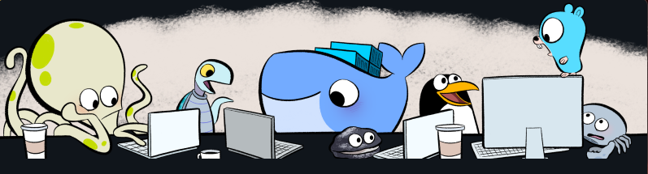
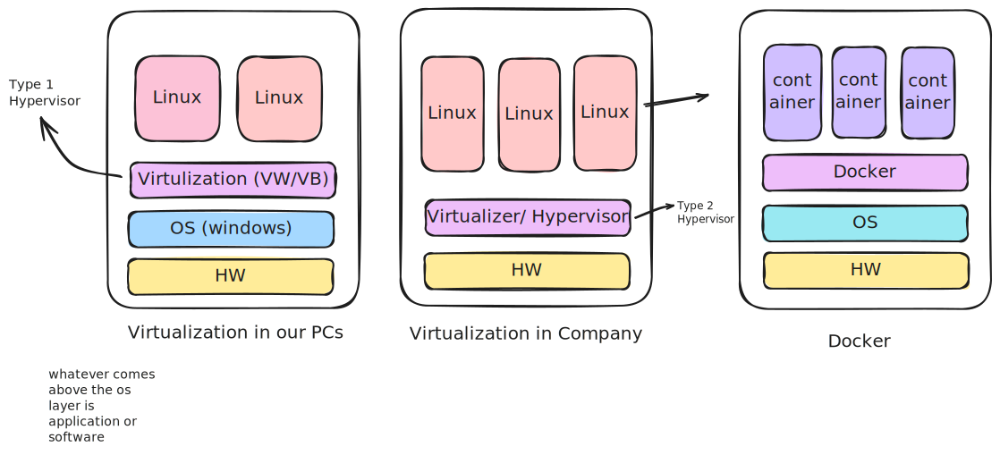

 Before Learning about docker it is crucial to know about containers and even before that one should know what is Microservices and monolithic application architecture
Monolithic vs Microservice Apps
At initial stages of the software development developers usually build software in monolithic way meaning everything that software has to offer is bundle in the single unit but as the development goes on the need to federate the services of the software arises and developers adapt Microservices method to divide software into chunks so all chunks communicate with each other creating illusion of one single software.
Monolithic Application
- Single unified application
Microservice app
- one app divided in chunks
What is docker?
*Docker is a containerization technology that packages your application in special portable sandboxed format along with its dependencies and system libraries for better compatibility across devices.

What is container?
- its like small virtual machines
- containers are free to use all the system resources they needs
- whereas in vms softwares has limited preallocated resources to use
Docker Commands
#Creating a nginx container
docker run nginx
# run as detached mode
docker run -d nginx
# list running containers
docker ps
# list all containers
docker ps -a
# kill running container
docker kill <container-id>
# expose container on random host port
docker run -P nginx
# expose container on custom host port
docker run -d -p 1313:8080 nginx:latest
# Stopping the container
docker stop <container id>
# removing stopped containers
docker rm <container id>
Installing docker
Rhel Based Distro Installation
Installing docker on amazonlinux and rhel based distros are much easier than installling on ubuntu
sudo yum install docker # rhel/amazonlinux/fedora etc
sudo pacman -S docker # archlinux based distrosUbuntu/Debian Family based distro Installation
curl -fsSL https://get.docker.com -o get-docker.sh && sudo sh get-docker.sh`Running this script should install following package inside your ubuntu based distro docker-engine, docker.io, containerd, runc.
Tip
However I still recommend to check this official installation guide
Enabling docker daemon
systemctl start docker
systemctl enable dockerTo run docker command its absolutely require to have docker daemon running in background otherwise it wont work so make sure you have docker daemon running.
Pulling the Image
docker pull nginxThis will pull latest version of nginx image from docker hub. By default its always going to pull latest tag In order to pull specific version you need to mention its tag name like this
docker pull nginx:1.23.1
Running the container from the image
docker run nginxThis command creates and starts a Docker container running the Nginx web serve. Although By default, Nginx runs on port 80 within the container. This command doesn’t map any ports, so you won’t be able to access the Nginx server from your host machine to specify port you can use-p flag.
Mapping specific port
docker run -p 8080:80 nginxHere 8080 is host machine port and 80 is container port
docker run -P nginxThis will map random port for the host machine.
Running the container in detached mode
docker run -d nginx`
Normally running container will cause container to run in foreground and occupy the terminal screen. So its better choice to use -d to make it run in background.
Giving the specific name to container
docker run --name my-container nginxBy default docker give funny names to containers. but you can specify your custom name and can use that name instead of ‘container-id’ in docker commands.
Stopping container
docker stop <conainer-id>Stopped containers and be restarted with start command
Removing stopped container
docker rm <container-id>Sometimes stopped or exited containers wont have any use and needs to be removed to save space.
Listing the running container
docker psThis will list all the running containers only and not exited or stopped ones.
To list all containers including exited and stopped ones use ps -a
docker ps -aSeeing the logs of the container
docker logs <container-id>This is important to monitor activities inside of containers.
Inspecting the running container
docker inspect <container-id>This will list all the information of container
Creating the image out of running container
docker commit <container-id> This will come in handy when you done changes inside running container and want to incorporate these changes into your image.
$ sudo docker images
REPOSITORY TAG IMAGE ID CREATED SIZE
<none> <none> 5c9d3a455e0f 10 seconds ago 214MB
Giving tag to image
docker tag <image-id> new-nameAdding tag is like giving Image a name this comes in handy for identifying images.
$ sudo docker images
REPOSITORY TAG IMAGE ID CREATED SIZE
custom-nginx latest 5c9d3a455e0f 47 seconds ago 214MBPushing Image to docker hub and ECR
docker push <image-id>If you have verified docker hub login through docker login command it will automatically push the image to your docker hub repo assuming your docker hub repo has same name as your image tag
and same goes to ECR except you need to authenticate through slightly different method:
aws ecr get-login-password --region <region-name> | docker login --username AWS --password-stdin <amazon-account-id>.dkr.ecr.<region-name>.amazonaws.com